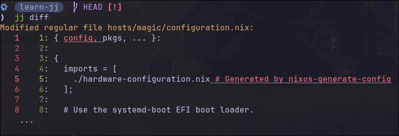

Practical Jujutsu
This post assumes basic understanding of Git and GitHub.
I’ve spent enough time hovering between the familiarity of Git and the potential of Jujutsu. It’s time to move past a ‘primitive’ workflow. By truly mastering one of these tools, I want to turn version control from a chore into a way to precisely navigate my development stages and build a history that future contributors can actually follow.
JJ simplifies keeping a linear history and makes it easy to break down big changes into smaller atomic changes.
Atomic commits & Linear History explained
- Atomic Commits
-
An atomic commit is a single unit of work that cannot be broken down further without losing its meaning.
-
One commit should do one thing.
-
If you had to “undo” that commit later, would it break unrelated features? If “Yes,” it’s not atomic.
If you find a bug, you can pinpoint the exact 10 lines of code that caused it.
In jj, the split -i and commit -i commands are the ultimate tools for
“atomizing” a messy afternoon of coding.
- Linear History
A linear history is a straight line of commits without “merge bubbles” (those criss-crossing lines you see in Git logs when people use git merge).
-
Every commit has exactly one parent and one child.
-
It reads like a story. You can follow the evolution of the project from bottom to top without getting lost in a maze of branches.
-
jjdefaults to a rebase-heavy workflow. Instead of “merging” your work and creating a mess, you are constantly “sliding” your changes on top of the latest work, keeping that line perfectly straight.
You can even insert a commit anywhere in your history with jj new -A
(--insert-after), and jj new -B (--insert-before) and JJ will rebase every
child in the history.
Use jj show -r <revision> to see a diff of the changes made at that Change ID,
and trivially craft it with jj edit -r <revision>.
Let’s learn about jj by using it to version control a system Nix Flake.
Quick Overview
Key Terms
“One of the first things to wrap your head around when first coming to Jujutsu is its approach to its revisions and revsets, i.e. “sets of revision”. Revisions are the fundamental elements of changes in Jujutsu, not “commits” as in Git. Revsets are then expressions in a functional language for selecting a set of revisions.” –Chris Krycho jj init
| Term | What it is | Git Equivalent | JJ Behavior |
|---|---|---|---|
Working Copy (@) | Your current editable commit. Everything you do affects @ by default. Auto‑amends as you save files. | Untracked files + staging area + HEAD | Always a full commit. No staging. jj st shows changes relative to @-. |
| Change ID | Stable ID for a logical unit of work (the k, y labels in logs). Survives edits/rebases. | N/A | Prefix like k or y. Use jj edit k1234 to jump to any change. |
| Commit ID | Unique ID for a specific snapshot (the long hex like 41deb985). Changes when you amend. | Commit hash | Full ID for exact snapshots. Rarely used directly. |
| Bookmarks | Named pointers to commits (like main, feature-x). Don’t auto‑move like Git branches. | Branches | jj bookmark set main -r @ moves it. * shows if local/remote match. |
Parent (@-) | The commit @ is built on top of. | Previous commit | Use -r @- to target it. Key for squash workflow. |
Immutable (◆) | Commits that shouldn’t be rewritten (pushed changes, trunk). | Protected branches | jj log shows ◆. Still editable with force flags. |
| Revset | Query language for commits (main..@, mine()). | git log --grep | Super powerful. jj log -r "main..@" = changes since main. |
| Revision | “revision” is synonymous with “commit” | Commit | A synonym for Commit |
Pro tip: @ is always your current position. jj new, jj desc,
jj squash all default to it. Bookmarks like main are just labels - move
them explicitly with jj bookmark set.
See
zerowidths jj-tips-and-tricks,
for a more intuitive --interactive workflow (The git add -p Hunk-wise
style).
Getting Started
It’s helpful to grasp a few Git concepts to fully understand some of the
benefits and strengths of jujutsu. I highly suggest reading
W3Tutorials.net How to Compare Working Copy, Staging Copy, and Committed Copy of a File in Git,
it covers most of the concepts that make understanding jj easier.
-
The Working Copy is the version of the file you’re actively editing in your filesystem. It’s the “live” version you see in your text editor or IDE. –W3Tutorials.net
“Unlike most other VCSs, Jujutsu will automatically create commits from the working-copy contents when they have changed. Most
jjcommands you run will commit the working-copy changes if they have changed. The resulting revision will replace the previous working-copy revision.”
In Git, HEAD is a pointer (usually to a branch like main), and that branch
points to the current commit.
In jj, the working copy @ is itself the current commit. Bookmarks like main
simply point at other commits in the graph, so your working copy is often a
child of a bookmark, but it can also be off on its own.
❯will indicate a command that I ran, the rest is output.
Let’s start by cloning a project of mine to see how jj works:
❯ jj git clone git@github.com:sayls8/nix-snake.git
Fetching into new repo in "/home/jr/projects/nix-snake"
remote: Enumerating objects: 88, done.
remote: Total 88 (delta 38), reused 78 (delta 30), pack-reused 0 (from 0)
bookmark: main@origin [new] tracked
Setting the revset alias `trunk()` to `main@origin`
Working copy (@) now at: s f143a1da (empty) (no description set)
Parent commit (@-) : l 3b759dfe main | feat: fix clippy lints & optimize
Added 12 files, modified 0 files, removed 0 files
Hint: Running `git clean -xdf` will remove `.jj/`!
- We can see above that the
main@originbookmark is automatically tracked with a revset alias oftrunk().
NOTE: My jj commands show the shortest possible IDs because of the setting:
programs.jujutsu.settings = { template-aliases = { "format_short_change_id(id)" = "id.shortest()"; }; };
Running jj st & jj log:
❯ jj st
The working copy has no changes.
Working copy (@) : s f143a1da (empty) (no description set)
Parent commit (@-): l 3b759dfe main | feat: fix clippy lints & optimize
❯ jj log
@ s sayls8@proton.me 2026-03-21 16:31:59 f143a1da
│ (empty) (no description set)
◆ l sayls8@proton.me 2026-01-29 16:50:51 main 3b759dfe
│ feat: fix clippy lints & optimize
~
To show all ancestors of the most recent commit, s in this case:
jj log -r ::s
-
The
@indicates the working-copy commit. The first ID on a line (e.g. “s” above) is the change ID. The second ID is the commit ID (“f143a1da”). You can give either ID to commands that take revisions as arguments. -
jj logdefaults to theui.default-revsetsetting, or@ | ancestors(immutable_heads().., 2) | heads(immutable_heads())if it’s not set. (A revset) -
jjcommands default to operating on the working copy,@.jj undo, undoes your previousjjcommand. List all previousjjcommands withjj op log.
In JJ, you are never “on” a branch. You are always “on” a specific change,
building a stack of changes. Until you push those changes, you can continue to
jump around and edit them with jj edit. Once you push those changes to a
remote, they then become immutable.
You don’t have to merge Change A into Change B, because Change B is
already built on top of Change A. It inherits every line of code from the
floors below it.
In Git, the working copy is the files on disk; changes only become part of the
next commit when you stage them in the index with git add. In Jujutsu, the
working copy is the current commit: your edits live in a “working copy commit”
(@), which jj automatically updates from the files on disk, and there is no
separate staging area.
When you’re ready to push to GitHub, make sure you know where your changes are.
In the example above, the working copy is empty, so to push I’d run
jj bookmark set main -r @- to point the main bookmark at the latest changes,
then jj git push.
jj git push: By default, pushes tracking bookmarks pointing toremote_bookmarks(remote=<remote>)..@. Use--bookmarkto push specific bookmarks. Use--allto push all bookmarks. Use--changeto generate bookmark names based on the change IDs of specific commits.
If the working copy isn’t empty and those changes are what I want to push, I’d
instead run jj bookmark set main -r @, followed by jj git push. Once you
understand this distinction, the rest of the workflow feels fairly intuitive.
-
jjis smart enough to know that: Ifmainis on your Working Copy (@) and you have uncommitted changes, it pushes those. -
If your Working Copy (
@) is empty , andmainis on the Parent (@-), it pushes the parent.
In the above example, if I remove the config argument to the
configuration.nix and remove a few comments, then run jj diff:

-
The
squashworkflow would benefit especially fromjj diff. It’s like saying “take the diff I’m looking at right now and bake it directly into the parent”. -
A change is a commit that can evolve while keeping a stable identifier, the change ID.
Version Control Best Practices
It’s helpful to use Conventional Commits, a set of rules for creating an explicit commit history.
Commit message standard syntax:
<type>[optional scope]: <description>
[optional body]
[optional footer(s)]
Example:
feat: implement dendretic pattern for boot module
Useful Utils
-
There is a new project that helps you create conventional commits for jj, jj-commit.
-
commitlint-rs can be used as a Git hook on push to enforce conventional commits.
-
semantic-release automates the whole package release workflow.
The edit workflow
Initialize and colocate the repository:
❯ mkdir learn-jj
~/projects
❯ cd learn-jj
~/projects/learn-jj
❯ nix flake new . -t github:nix-community/home-manager#nixos
wrote: "/home/jr/projects/learn-jj/flake.nix"
~/projects/learn-jj ✗
❯ jj git init --colocate
Initialized repo in "."
Hint: Running `git clean -xdf` will remove `.jj/`!
learn-jj main [?]
❯ jj git remote add origin git@github.com:sayls8/learn-jj.git
learn-j main [?]
❯ jj bookmark create main -r @
Done importing changes from the underlying Git repo.
Created 1 bookmarks pointing to l bd3847c0 main | (no description set)
learn-jj refs/jj/root [!]
❯ jj bookmark track main --remote=origin
Started tracking 1 remote bookmarks.
Let’s give it our current change a description:
❯ jj desc -m "chore: Initialize system flake"
Working copy (@) now at: l 743b170d main* | chore: Initialize system flake
Parent commit (@-) : z 00000000 (empty) (no description set)
In this example, the Parent commit is the root commit. The root commit is a
virtual commit at the root of every repository. It has a commit ID consisting of
all ’0’s (00000000...) and a change ID consisting of all ’z’s (zzzzzzzz...).
It can be referred to in revsets by the function root().
-
With this workflow, your working copy is typically at your current change.
-
JJ treats the working copy as a commit rather than having an index like Git.
If we wanted to push right now we could with jj git push (or equivalently
jj git push --bookmark main), but let’s first learn a bit more about how jj
works.
Let’s say we’re done with the current change and we’re ready to make it immutable and start a new change:
❯ jj new -m "chore: change username & hostname in flake.nix"
Working copy (@) now at: p 6524f35a (empty) chore: change username & hostname in flake.nix
Parent commit (@-) : l 743b170d main* | chore: Initialize system flake
-
As stated above,
jjcommands default to the working copy. Sojj newis the same asjj new -r @. By runningjj newrepeatedly, we build a linear stack where each change is a child of the previous one. When we’re ready to ‘check in’ our work, we don’t merge; we simply move themainbookmark to our current position and push.- If we want to start a separate task without including our current work, we
can run
jj new main(or any other Change ID). This creates a sibling change. Our previous stack isn’t “lost”; it stays exactly where it was in the graph, waiting to be described, rebased, or merged later.
- If we want to start a separate task without including our current work, we
can run
-
Now our Working copy
@is at an(empty)change with the description “chore: change username & hostname in flake.nix”. -
As you can see, running
jj new, does not move themainbookmark. This is the hardest part to grasp when coming from Git IMO. Let’s make some more changes to hammer this home.
I’ve added my hostname and username to the flake.nix template, let’s make them
a part of the permanent record.
I create a minimal configuration.nix, check my status and notice that I forgot
to run jj new -m "feat: create minimal configuration.nix". Let’s see how to
recover from this and keep our commits atomic.
jj split -i
- This opens up a diff editor, I’ll only press
yfor the changes related to username and hostname. After you pass on what you don’t want in this change and pressyon what you do want, your $EDITOR will open with your previous commit message. Save it and another commit message will open up in $EDITOR, this is whatever you didn’t pressyon i.e., theconfiguration.nixchanges, just give the second set of changes a different description and you’re all set.
Another cool thing about jj is that you can add a description whenever you
want. Running jj desc -m "add configuration.nix" doesn’t finalize your commit
like it does with Git. So, you can put the description first, last, or in the
middle of a current change with no issue. The equivalent command to
git commit -m "message" is jj commit -m "message" && jj new
Let’s see what the jj split -i command left us with:
❯ jj
Working copy changes:
A configuration.nix
Working copy (@) : m b3cc09db feat: create minimal configuration.nix
Parent commit (@-): p cddde3b4 chore: change username & hostname in flake.nix
- To see a diff of the changes in the parent commit:
jj show -r @-
And our log:
❯ jj log
@ m sayles8@proton.me 2026-03-15 13:43:31 b3cc09db
│ feat: create minimal configuration.nix
○ p sayls8@proton.me 2026-03-15 13:41:19 cddde3b4
│ chore: change username & hostname in flake.nix
○ l sayls8@proton.me 2026-03-15 13:37:29 main* 743b170d
│ chore: Initialize system flake
◆ z root() 00000000
As you can see, main* is all the way back at change l. Let’s move our main
bookmark to our current Working copy.
❯ jj bookmark set main -r @
Moved 1 bookmarks to m b3cc09db main* | feat: create minimal configuration.nix
❯ jj log
@ m sayls8@proton.me 2026-03-15 13:43:31 main* b3cc09db
│ feat: create minimal configuration.nix
○ p sayls8@proton.me 2026-03-15 13:41:19 cddde3b4
│ chore: change username & hostname in flake.nix
○ l sayls8@proton.me 2026-03-15 13:37:29 743b170d
│ chore: Initialize system flake
◆ z root() 00000000
❯ jj git push
Changes to push to origin:
Add bookmark main to b3cc09dba32c
git: Enumerating objects: 9, done.
git: Counting objects: 100% (9/9), done.
git: Delta compression using up to 16 threads
git: Compressing objects: 100% (7/7), done.
git: Writing objects: 100% (9/9), 1.99 KiB | 1019.00 KiB/s, done.
git: Total 9 (delta 1), reused 0 (delta 0), pack-reused 0 (from 0)
remote: Resolving deltas: 100% (1/1), done.
Warning: The working-copy commit in workspace 'default' became immutable, so a new commit has been created on top of it.
Working copy (@) now at: u 551e83ad (empty) (no description set)
Parent commit (@-) : m b3cc09db main | feat: create minimal configuration.nix
❯ jj log
@ u sayls8@proton.me 2026-03-15 13:47:27 551e83ad
│ (empty) (no description set)
◆ m sayls8@proton.me 2026-03-15 13:43:31 main b3cc09db
│ feat: create minimal configuration.nix
-
Notice
jj lognow showsmaininstead ofmain*, indicating thatmainandorigin@mainare in sync! -
Also notice the
◆next to themchange, this indicates that this change is now immutable. This is mentioned in the output ofjj git pushabove.jjdoes this so you don’t accidentally rewrite history that others might have pulled. You can still force-edit if you need to but it’sjjs way of saying, “This is now part of the public record”.
I now need to add a minimal home.nix, then run nix flake check to see if I
forgot anything.
If something isn’t being picked up by jj try running jj st and check again.
Running any jj command updates the Working copy.
Since when running jj git push jj automatically creates a new commit on top
of the last one, the next step is to describe this change.
I ran nix flake check and needed to add a hardware-configuration.nix, and
networking.hostId required by ZFS, if I wanted to be a stickler about atomic
commits I’d run jj split -i again but it’s fine by me to make 2 small changes
to get the flake to pass the check.
The squash Workflow
The last section left me with:
❯ jj st
Working copy changes:
M configuration.nix
A flake.lock
A hardware-configuration.nix
A home.nix
Working copy (@) : u e57a7a39 feat: add minimal home.nix
Parent commit (@-): m b3cc09db main | feat: create minimal configuration.nix
Let’s push what we have:
❯ jj bookmark set main -r @
Moved 1 bookmarks to u e57a7a39 main* | feat: add minimal home.nix
learn-jj HEAD [!]
❯ jj git push
Changes to push to origin:
Move forward bookmark main from b3cc09dba32c to e57a7a39957a
git: Enumerating objects: 8, done.
git: Counting objects: 100% (8/8), done.
git: Delta compression using up to 16 threads
git: Compressing objects: 100% (6/6), done.
git: Writing objects: 100% (6/6), 1.98 KiB | 1.98 MiB/s, done.
git: Total 6 (delta 1), reused 0 (delta 0), pack-reused 0 (from 0)
remote: Resolving deltas: 100% (1/1), completed with 1 local object.
Warning: The working-copy commit in workspace 'default' became immutable, so a new commit has been created on top of it.
Working copy (@) now at: y 53e8a3d9 (empty) (no description set)
Parent commit (@-) : u e57a7a39 main | feat: add minimal home.nix
❯ jj st
The working copy has no changes.
Working copy (@) : y 53e8a3d9 (empty) (no description set)
Parent commit (@-): u e57a7a39 main | feat: add minimal home.nix
Great, just what we need, an empty change! Let’s describe what we plan on doing:
jj desc -m "refactor: restructure flake to multi-host layout in hosts/magic"
Now we create a new change on top of this one:
❯ jj new
Working copy (@) now at: w 43195106 (empty) (no description set)
Parent commit (@-) : y c66bc991 (empty) refactor: restructure flake to multi-host layout in hosts/magic
Now we make our changes to the descriptionless Working copy and squash our
changes into the parent commit.
mkdir -p hosts/magic
jj st
The working copy has no changes.
Working copy (@) : w 43195106 (empty) (no description set)
Parent commit (@-): y c66bc991 (empty) refactor: restructure flake to multi-host layout in hosts/magic
Ahh, jj doesn’t pick up empty directories…
mv configuration.nix home.nix hosts/magic
jj st
Working copy changes:
R {configuration.nix => hosts/magic/configuration.nix}
R {home.nix => hosts/magic/home.nix}
Working copy (@) : w 8c49fc64 (no description set)
Parent commit (@-): y c66bc991 (empty) refactor: restructure flake to multi-host layout in hosts/magic
R= Renamed.jjis pretty clever here. Since I moved the files but their contents stayed the same,jjdetected that I didn’t just “delete” one file and “add” a new one, I actually moved an object from point A to point B.- The fact that
jjshowsR {home.nix => hosts/magic/home.nix}means it is keeping the history of that file intact. If you were to look at the log forhosts/magic/home.nixlater,jjwould know to look back into the history of the oldhome.nixas well.
- The fact that
I’m happy with the changes so far:
❯ jj squash
Working copy (@) now at: k 41deb985 (empty) (no description set)
Parent commit (@-) : y 2bee669a refactor: restructure flake to multi-host layout in hosts/magic
- Notice how change
wdisappeared andyis no longer empty? That’s because we squashed the changes from our Working copy into the parent commit!
Pushing from the squash workflow
Let’s look at what we have:
❯ jj st
The working copy has no changes.
Working copy (@) : k 41deb985 (empty) (no description set)
Parent commit (@-): y 2bee669a refactor: restructure flake to multi-host layout in hosts/magic
Since the working copy is at an (empty) change, it wouldn’t make sense to push
it. We have to move our bookmark to the parent commit, and then push!
❯ jj bookmark set main -r @-
Moved 1 bookmarks to y 2bee669a main* | refactor: restructure flake to multi-host layout in hosts/magic
❯ jj git push
Changes to push to origin:
Move forward bookmark main from e57a7a39957a to 2bee669ac276
git: Enumerating objects: 5, done.
git: Counting objects: 100% (5/5), done.
git: Delta compression using up to 16 threads
git: Compressing objects: 100% (3/3), done.
git: Writing objects: 100% (4/4), 452 bytes | 452.00 KiB/s, done.
git: Total 4 (delta 1), reused 0 (delta 0), pack-reused 0 (from 0)
remote: Resolving deltas: 100% (1/1), completed with 1 local object.
This was the biggest Aha moment I had. It makes perfect sense that you wouldn’t
want to push a change that changes nothing. Since we squashed the contents of
the Working copy into @-, that is where we need main to point.
I have an alias:
la = [
"log"
"-r"
"all()"
];
You can also list all commits with:
jj log -r ::
# or
jj log r 'all()'
Let’s check out our full history so far:
❯ jj la
@ k sayls8@proton.me 2026-03-15 14:30:43 41deb985
│ (empty) (no description set)
◆ y sayls8@proton.me 2026-03-15 14:30:43 main 2bee669a
│ refactor: restructure flake to multi-host layout in hosts/magic
◆ u sayls8@proton.me 2026-03-15 14:07:28 e57a7a39
│ feat: add minimal home.nix
◆ m sayls8@proton.me 2026-03-15 13:43:31 b3cc09db
│ feat: create minimal configuration.nix
◆ p sayls8@proton.me 2026-03-15 13:41:19 cddde3b4
│ chore: change username & hostname in flake.nix
◆ l sayls8@proton.me 2026-03-15 13:37:29 743b170d
│ chore: Initialize system flake
◆ z root() 00000000
-
Textbook linear history. Every single commit has exactly one parent, forming a single, unbroken chain from the
root()up to the current working copy. -
The diamonds
◆show that everything fromydown is now part of the permanent record (pushed to the remote).
In Git, achieving this usually requires git add, git commit --amend, or an
interactive rebase. In jj, you just worked in the working copy and pushed, the
tool handled the “shaping” of the history for you.
Bookmarks and Branches
Bookmarks are named pointers to revisions (just like branches are in Git). You can move them without affecting the target revision’s identity. – Jujutsu docs
Branches are just multiple “changes” with the same parent.
List all available bookmarks
❯ jj bookmark list --all
feat1 (deleted)
@origin: xo 9067e7b7 mangowc flake-parts module
main: s b250e6ed testing the push-on-new non working bs
@git: s b250e6ed testing the push-on-new non working bs
@origin (behind by 2 commits): o 65e79e4b jj bookmarks push-on-new
Hint: Bookmarks marked as deleted can be *deleted permanently* on the remote by running `jj git push --deleted`. Use `jj bookmark forget` if you don't want that.
Every time you run jj git push, jj automatically runs jj new main for you
because the working copy becomes immutable after the push.
Show heads of all anonymous branches:
jj log -r 'heads(all())'
To visualize an anonymous branch, Steve’s Jujutsu tutorial does a great job of displaying this:
┌───┐ ┌───┐
┌───┤ F ◄─┤ G │
│ └───┘ └───┘
│
┌───┐ ┌───┐ ┌─▼─┐ ┌───┐ ┌───┐
│ A ◄──┤ B ◄──┤ C ◄─┤ D ◄─┤ E │
└───┘ └───┘ └───┘ └───┘ └───┘
Here, we’d say that F and G are two changes that are “on a branch,” because
it looks like they’re branching off from D and E.
Steves Jujutsu tutorial What is a branch conceptually?
The above sentence confused me a bit. F and G are described as branching
“off” of the line containing D and E. However, in the literal graph
structure, they diverge from C.
Since F and D both point to C, they are “siblings”. Because no other
commits point back to E and G, they are the only two heads.
In Jujutsu, a branch is just any path of commits that hasn’t been merged yet. Since E and G are both visible and unmerged, we have two “anonymous branches” currently active.
The output of jj log -r 'heads(all())' with the above example, would yield:
○ G
│
~
│
○ E
│
~
GandEare the heads of the anonymous branches.
Examples
Start at an empty change:
❯ jj log
@ p saylesss87@proton.me 2026-03-24 18:05:54 6469af06
│ (no description set)
Give the current change a description:
jj desc -m "refactor(waybar): waybar flake-parts module"
❯ jj log
@ p saylesss87@proton.me 2026-03-24 18:06:31 627d846c
│ refactor(waybar): waybar flake-parts module
○ yl saylesss87@proton.me 2026-03-24 17:55:00 56d13161
│ refactor(foot): foot flake-parts module
To create a branch we need 2 changes with the same parent, our current changes
parent is yl so let’s make our new change off of that:
❯ jj new yl -m "chore: add better documentation to README"
Working copy (@) now at: v 4697897a (empty) chore: add better documentation to README
Parent commit (@-) : yl 56d13161 refactor(foot): foot flake-parts module
Added 1 files, modified 1 files, removed 1 files
Let’s check out our log to see our anonymous branches:
❯ jj
@ v saylesss87@proton.me 2026-03-24 18:12:04 4697897a
│ (empty) chore: add better documentation to README
│ ○ p saylesss87@proton.me 2026-03-24 18:06:31 627d846c
├─╯ refactor(waybar): waybar flake-parts module
○ yl saylesss87@proton.me 2026-03-24 17:55:00 56d13161
│ refactor(foot): foot flake-parts module
We can see that p branches off from yl, let’s make this change before
switching to the other branch.
❯ jj st
Working copy changes:
M README.md
Working copy (@) : v 23d94e56 chore: add better documentation to README
Parent commit (@-): yl 56d13161 refactor(foot): foot flake-parts module
# This effectively moves the working copy to the other "branch"
❯ jj edit p
Working copy (@) now at: p 627d846c refactor(waybar): waybar flake-parts module
Parent commit (@-) : yl 56d13161 refactor(foot): foot flake-parts module
Added 1 files, modified 2 files, removed 1 files
In Git, you
checkouta branch name; injj, you just move your working copy (@) to whichever commit you want to build on.
I’ve added the new flake-parts module and deleted the old home-manager style module:
❯ jj st
Working copy changes:
D home/waybar.nix
M hosts/magic/home.nix
A parts/waybar.nix
Working copy (@) : p 627d846c refactor(waybar): waybar flake-parts module
Parent commit (@-): yl 56d13161 refactor(foot): foot flake-parts module
Let’s add another change on this branch to solidify these concepts:
❯ jj new -m "refactor(nh): nh flake-parts module"
Working copy (@) now at: n ac086b55 (empty) refactor(nh): nh flake-parts module
Parent commit (@-) : p 627d846c refactor(waybar): waybar flake-parts module
And our log to show that this branch has grown:
❯ jj log
@ n saylesss87@proton.me 2026-03-24 18:22:12 ac086b55
│ (empty) refactor(nh): nh flake-parts module
○ p saylesss87@proton.me 2026-03-24 18:06:31 627d846c
│ refactor(waybar): waybar flake-parts module
│ ○ v saylesss87@proton.me 2026-03-24 18:17:51 23d94e56
├─╯ chore: add better documentation to README
○ yl saylesss87@proton.me 2026-03-24 17:55:00 56d13161
│ refactor(foot): foot flake-parts module
Now, let’s first merge the README branch into this one. We are worried about the heads of the anonymous branches right now:
❯ jj log -r 'heads(all())'
@ n saylesss87@proton.me 2026-03-24 18:22:12 ac086b55
│ (empty) refactor(nh): nh flake-parts module
~
○ v saylesss87@proton.me 2026-03-24 18:17:51 23d94e56
│ chore: add better documentation to README
A merge is a new change that has more than one parent. With JJ, you make a
change with jj new. We can see that we need to make a change with both n and
v as parents from the log output above:
❯ jj new n v -m "feat: merge in README docs"
Working copy (@) now at: yn a923db65 (empty) feat: merge in README docs
Parent commit (@-) : n ac086b55 (empty) refactor(nh): nh flake-parts module
Parent commit (@-) : v 23d94e56 chore: add better documentation to README
Added 0 files, modified 1 files, removed 0 files
❯ jj log
@ yn saylesss87@proton.me 2026-03-24 18:28:47 a923db65
├─╮ (empty) feat: merge in README docs
│ ○ v saylesss87@proton.me 2026-03-24 18:17:51 23d94e56
│ │ chore: add better documentation to README
○ │ n saylesss87@proton.me 2026-03-24 18:22:12 ac086b55
│ │ (empty) refactor(nh): nh flake-parts module
○ │ p saylesss87@proton.me 2026-03-24 18:06:31 627d846c
├─╯ refactor(waybar): waybar flake-parts module
○ yl saylesss87@proton.me 2026-03-24 17:55:00 56d13161
│ refactor(foot): foot flake-parts module
That messes up our perfectly linear history, let’s rebase instead.
❯ jj undo
Undid operation: a74a45f02043 (2026-03-24 18:28:47) new empty commit
Restored to operation: 848c180f2a04 (2026-03-24 18:22:12) new empty commit
Working copy (@) now at: n ac086b55 (empty) refactor(nh): nh flake-parts module
Parent commit (@-) : p 627d846c refactor(waybar): waybar flake-parts module
Added 0 files, modified 1 files, removed 0 files
Rebase is your tool for changing the ‘parent’ of a commit. If you have two parallel features (siblings) and you decide one should follow the other (linear stack), you rebase the second feature onto the first.
❯ jj rebase -r v -o n
Rebased 1 commits to destination
Now our history is back to being completely linear:
❯ jj log
○ v saylesss87@proton.me 2026-03-24 18:30:36 8101b0dd
│ chore: add better documentation to README
@ n saylesss87@proton.me 2026-03-24 18:22:12 ac086b55
│ (empty) refactor(nh): nh flake-parts module
○ p saylesss87@proton.me 2026-03-24 18:06:31 627d846c
│ refactor(waybar): waybar flake-parts module
○ yl saylesss87@proton.me 2026-03-24 17:55:00 56d13161
│ refactor(foot): foot flake-parts module
To move a stack of changes, use jj rebase -s [Source] -d [Destination]. If you
want to move a feature to the very tip of your main line, destination is main.
If you want to chain features together, destination is the previous feature’s
head.
Pay attention to where @ is while rebasing, to continue on this linear stack
I’ll have to run jj new v.
Collaborating and opening PRs
So far all the examples assumed you are the only person touching this repo. For collaboration (GitHub / GitLab PRs, code review, etc.), the mental model is:
-
GitHub only understands branches and commits.
-
Jujutsu gives you changes and bookmarks.
-
You use
jj git pushto translate your clean JJ history into a Git branch that others can review.
A simple pattern that works well for feature branches and PRs:
- Start from
main
Make sure main is up to date and your working copy is clean:
jj git fetch
jj edit main
jj st
You should see an (empty) working copy with main as the parent.
- Create a named feature branch as a bookmark
In JJ, you don’t “checkout” a branch, you create a new change and (optionally) give it a bookmark name:
# Create a new change on top of main and start working there
jj new main -m "feat: add magic host"
# Optionally create a bookmark that GitHub will see as a branch
jj bookmark create feature/magic-host -r @
-
jj new mainmakes a sibling of any in‑progress work and starts a fresh change on top ofmain. -
The bookmark
feature/magic-hostis what will become the Git branch name when you push.
- Hack, split, squash as usual
Work in your normal JJ style:
# edit files
jj st
jj split -i
jj desc -m "feat: add magic host"
jj new
# more changes, more desc/split/squash, etc.
All of this is still local, fully mutable history.
- Point your feature bookmark at the top of the stack
When you’re happy with the stack you want to send for review, move the bookmark to the tip:
# If your working copy @ is the commit you want reviewed:
jj bookmark set feature/magic-host -r @
# If you used the squash workflow and @ is empty:
jj bookmark set feature/magic-host -r @-
Rule of thumb:
-
If
jj stshows actual changes or a non‑empty description at@, use@. -
If
@is (empty) because you squashed into the parent, use@-.
- Push to Git and open the PR
Now push just like before, but your feature bookmark will become a branch on the remote:
jj git push
This will:
-
Update
origin/feature/magic-hostto point at the same commit as your localfeature/magic-host. -
Leave
mainalone until you explicitly move and push it.
On GitHub/GitLab:
-
You’ll see a branch named
feature/magic-host. -
Open a PR from
feature/magic-hostintomainas usual.
- Iterate on review feedback
If a reviewer asks for changes:
- Come back to your feature branch stack:
jj edit feature/magic-host
-
Make your edits, split/squash/reword history freely.
-
Move the bookmark to the new tip and push again:
jj bookmark set feature/magic-host -r @
jj git push
GitHub will show the PR updating in place, but you got to reshuffle history
locally without git rebase -i pain.
“I just want a one‑off PR, no named bookmark”
If you don’t care about a persistent bookmark and just want a quick “one‑shot” PR from whatever you’re currently working on:
-
Make sure your stack is in the shape you want.
-
Put main on the top of that stack:
# Working copy @ is the tip you want:
jj bookmark set main -r @
# Or equivalently `jj bookmark set main` since commands default to the working copy
jj git push
- On GitHub, create the PR from your fork’s main to upstream main.
This is essentially the same pattern we already use in the “squash workflow,”
but applied with the mental model: “move the bookmark people care about (main
or a feature name) to the commit I want them to review, then push.”
Workflow Considerations
You may want to change up how you work depending on your requirements…
- The Tower Workflow (The “Dependent Stack”)
You use a tower when your changes build on top of each other.
-
main→Feature A→Feature B→Feature C -
Use it when you are refactoring a Nix module (Feature A), and then you need to use that new module to configure your desktop (Feature B). You literally cannot do B without A.
The Collaborative Benefit: You can push the entire stack. Your teammates see the logical progression of your thought process. They can review “Feature A” while you are already working on “Feature C.”
- The Sibling Workflow (
jj new main) You usejj new mainwhen you are working on independent ideas that have nothing to do with each other.
- How it looks: *
main→Fix-Helix-Keys-
main→Update-Nix-Channel -
main→New-Wallpaper-Script
-
When to use it: You’re in the middle of a massive system refactor, but you suddenly notice your Helix C-p bind is broken. You don’t want the Helix fix to be “trapped” behind the refactor.
The Collaborative Benefit: Isolation. If your “System Refactor” is buggy and
takes three days to fix, you can still jj git push the “Helix Fix” to main
immediately because it’s a direct child of main. It isn’t “waiting” for the
other commits.
Fixing Divergent Branches
jj makes it easy to fix divergent branches with jj forget.
As an example imagine this scenario:
-
On your Laptop: You finish a feature and jj git push. Local main and origin/main are now at Revision B.
-
On your Desktop: You forgot to pull. Local main is still at Revision A. You start hacking and create Revision C.
-
The Mess: You run
jj git fetch. Now your Desktop sees:
-
main(local) at C -
main@originat B -
jjfreaks out and marks the bookmark as diverged (main*).
jj bookmark forget main is the “I don’t want to think about it” button. It
deletes the main* label on your Desktop so you can just fetch the “real” one
from the Laptop/GitHub and rebase your new work (C) on top of it.
Tips & Tricks
Your History is just a stack of diffs:
-
jj commit -i: Slices a diff off your current work. -
jj split -i: Slices an existing diff into two. -
jj bookmark forget: Deletes a label that got messy.
The Ghost Refactor
The Scenario: You’re in the middle of a complex Rust feature (Change C), and you realize a function in the base (Change A) needs to be public or renamed for this to work.
-
jj new A -m "quick fix"→ Creates a new “slice” right after A. -
Make your change.
-
jj squash→ This “melts” the fix directly into A.
Use jj describe as a Task List
Because jj doesn’t require a “commit” to save work, you can use descriptions
to manage your focus.
When you start a session, create a few empty changes:
-
jj new main -m "Update Cargo.toml" -
jj new -m "Add pixel conversion logic" -
jj new -m "Fix CLI output formatting"
Now we have a roadmap. Use jj edit to jump into whichever task you feel like
doing. jj tracks the progress of each. No need to stash when jumping between
tasks because of the working copy commit.
Breaking up your Current set of Changes into Atomic Commits: “The Atomic
Shredder” jj split
Often I’ll just keep working on a bug or feature until it works, not particularly concerned about my VCS history. Let’s say I spent 3 hours hacking on a project of mine to get a feature working and I touched 10 files. It works, but the commit is a mess.
With the gitpatch tool, jj split -i makes it simple to break down many
changes into logical “atomic commits” using a simple y/ n interface.
You can actually use both jj commit -i & jj split -i to break down changes
in @ into smaller changes. jj commit -i is ergonomically tuned for “push
some current work down, leave the rest in @”.
If your changes are already in @- (or any earlier commit):
-
jj commit -ican’t help, because it only ever operates on@. -
jj split -i -r @-(or equivalent) can be used to modify an existing commit in history.
As a rule of thumb:
-
Changes in
@→ usejj commit -ito peel off a clean piece, and alsojj squash -ito squash a subset of changes from the working copy into the parent commit. -
Changes in
@-(or earlier) → usejj split -ito rewrite that commit